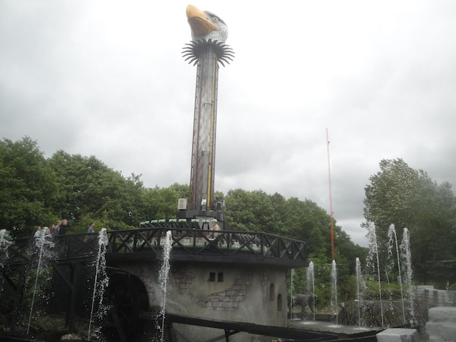
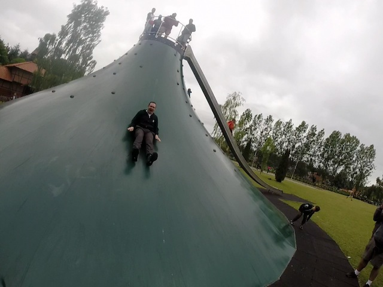
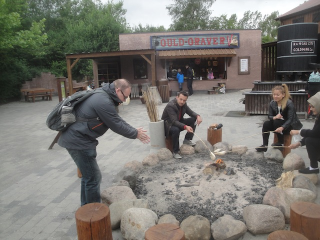

Djurs Sommerland is a fun little park. It's a really intersting park. It's hard to really describe the park. I guess the best way to describe the park is that it's very much like a summer camp. Yeah. It's a typical theme park in a lot of ways. You've got some really good roller coasters, including a freaking Intamin Mega-Lite, an Intamin Motorbike Coaster, among other fun coasters. They have some cool flat rides, including one of the only Topple Towers still in existince. But like a lot of the European Parks, the park has a lot of other stuff that you typically don't see in American Theme Parks. Mainly, the way that this park also has a ton of playground stuff, such as bouncing pillows, volcano slides, and other cool stuff to enjoy. In a way, it's very similar to its big brother up north, Farup Sommerland. Sure it may not have quite as much as Farup, but it still has a really nice balance. It's the kind of park that you wouldn't really go far out of your way to go visit (unless you really want to ride an Intamin Mega-Lite, which you totally should. They're freaking awesome), but it's still a really fun park to spend an afternoon at. The roller coasters are really good, they've got some fun flat rides, fun water rides, and plenty of bouncy fun to explore around on. Definetly give Djurs Sommerland a visit if you're in Denmark. It's a ton of fun.
Here are the reviews of all the Flat Rides at Djurs Sommerland. Now the flat ride collection here is...intersting. I wouldn't really call it a good flat ride collection, but there is one ride here that I would recommend simply because of the fact that it's really unique. That would be Ornen, their Topple Tower. Now the thing about Topple Towers is that they were a experimental ride that Huss made that they hoped would catch on like wildfire. But they weren't really good and had a lot of technical problems. Yeah, it looked really cool just seeing the entire tower topple. But while it looks really cool, it's actually pretty tame. You don't topple that fast, and while its pleasant, it's also not intense. Everybody complained about them not being intense, and they're right. I know one was built at Marineland. One was built at Dollywood. And one was built at Walygator Parc. All of these closed down (though I did get to see the Walygator Topple Tower SBNO when I visited). I honestly thought those were the only 3 Topple Towers in the world and that they all went extinct. But nope. There was a 4th one at Djurs Sommerland, and it's still open! So ride this ride simply for the fact that it's a unique ride. But not only that, but it's quirky. That's a good way of putting it. Not intense or anything, but just a fun little ride. The other ride I want to talk about is Wild West Karrusellen, their chairswings. Now normally, Chairswings aren't really worth discussing. But just like at Nickelodeon Universe, these chairswings go backwards. However, I learned that they only go backwards sometimes. Half the day, they run backwards. Half the day, they run forewards. Now while this is cool as it lets people choose. The real problem is that there's no sign telling you when they switch (or if there is one, I didn't see it). So I missed the backwards swings. But at least they exist here. Definetly check them out. They also apprently have this tilting drop tower. It's not very big, but it does look pretty fun. Almost like a mix between the topple tower and a small drop tower. That's all the flat rides really worth talking about. They also have a Bouncy Bouncy ride, some teacups, a pirate ship, one of those weird sailboat rides that I'm not sure what it's called, and a Rockin Tug. Not a really good flat ride collection, but there's some unique stuff in there.

Yeah. It's not a good ride. But it's still fun. And it's the only one left in the world.
Dark Rides
Djurs Sommerland may not really have a proper dark ride. There's no shooting dark ride or any ride that's even dark. The one dark ride they have is this politically incorrect Jungle Cruise knock off. That's the second one of these I've encountered in Europe. Is politically incorrect Jungle Cruise knock off just a new genre of dark ride? Cause, they're...interesting rides. They're fun, but mostly for the sake of laughing at the ride. Honestly, it's not even the political incorrectness that makes this ride unintentionally hilarious. Compared to other politically incorrect knock-offs, this one is pretty tame. What really makes this ride hilarious is just how bad the animatronics are. Seriously, these things are giant stuffed animals. I seriously am wondering if I could win one of these things as a carnival prize. OK, they're not all stuffed animals. Some of them are plastic. We'll call them giant action figures. =) And hey, it's got an anti-poaching message to it. That's always good.
If you thought the treatment of Animatronic Hippos was bad at Disneyland, wait till you take a look at how the stuffed lions are treated at Djurs Sommerland *sniff*. =(
Water Rides
Djurs Sommerland has two water rides. And I didn't ride either one of them. They have a log flume, and a rapids ride. The log flume looks pretty fun from what I saw. Not the best log flume ever, but it still looks like a fun and solid log flume. The rapids ride however, just seems tame and generic. But at least it has water cannons to soak people with. Maybe it's actually a really fun ride and I just ignored it. You'll have to check them out for yourself.
Dining
The dining at Djurs Sommerland is good. I enjoyed the spread that they gave us. I forget exactly which resteraunt we ate at, but I know it was some sort of buffet, and they had some pretty good stuff that they served us. I know I got pizza and lasagna. And yeah. Both of those are really freaking good. Especially when its Jalapeno Pizza and some other pizza that I'm not sure what it is. Honestly, the only issue I had was that you could only get a Diet Fanta. They had no regular Fanta. And considering how much I love European Fanta, that dissapointed me. But oh well. It was still pretty good. Hopefully they have that pizza in other places in the park.
Jalapenos make pizza even better.
Theming and Other Attractions
Here are the reviews of all the other stuff at Djurs Sommerland. Now the park isn't really that well themed, but they do technically have three themed areas that the park consists of. The Wild West (every park in Europe is required to have a Wild West area), an African Jungle area, and a Pirate Area. Arr! The theming may not be that good, but I always take the chance to act like a pirate! Arr! All right. As for other stuff to do, well...I hope you like trampolines, bouncing pillows, triangles, and other fun stuff to climb on. Because this park is absolutely full of them. And if you know me, then you know that I always love those bouncing pillows and those triangle slides. I mean, they're just a ton of fun. Also, another thing that they have is bread baking. Now you may be thinking that this is fairly common in the Scandinavian Parks. What's so special about it? Well first off, the pillows and trampolines are everywhere too. That doesn't mean that it shouldn't be discussed. And second of all, the bread baking here is a little bit different. Mainly, at most other places, they just hand you the dough already cooked, and you just bake it and turn it into bread. At Djurs Sommerland, you don't just bake the bread. You f*cking make it from scratch! No really. You could seriously get sick if you screw it up. I think. I'm not sure since I never did it. But I just might if I come back because bread baking is cool enough, but from scratch? That's just freaking cool. Hmm. Perhaps I should try baking bread from home (Nah. I can't cook. That'd end in disaster). I'm sure there's even more random fun stuff to do in the park, but those were the main things that I noticed.

Triangle slides are always fun. Especially when you just jump down. =)

Enjoy your raw dough.
In Conclusion
Djurs Sommerland is a small, but really fun theme park in Denmark. And the good news is that this park is only continuing to grow more and more. I know for a while, this park was completely off the map and really, only credit whores knew about the place. But then once they built Piraten, people started taking notice of the park because...yeah. They just put in a freaking Intamin MegaLite!!! And ever since then, the park has only been growing more and more. They added Juvalen a couple years after that, which is really freaking fun. And this year, they're adding a family invert that looks really similar to Oraken @ Farup Sommerland. And considering just how much fun that ride is, I really expect this new coaster to be a ton of fun. So yeah. They have all these new coasters, plus a fun Gerslauter Bobsled, and they also have a lot of other fun attractions. Topple Tower, Jungle Cruise Knock Off, and a ton of bouncy stuff that may be common all around Europe, but it's just a ton of fun here. I know this park sometimes gets compared to a summer camp, and yeah. I can sort of see the connection. Except most summer camps don't come with an Intamin Mega-Lite. So yeah. Definetly give Djurs Sommerland a visit if you're in Denmark. It's a fun little park with some really great rides.
Enthusiast FAQs.
*Are there kiddy coaster restrictions? - There were no restrictions to ride their old kiddy coaster. So I doubt you'd have any problems getting on the new one.
Tips
*Ride Piraten multiple times.
*Get the low capacity rides (Thor's Hammer, Skatteøen, Ornan) out of the way first.
*Even though Topple Towers aren't that good, do the one here simply because it's the last of its kind.